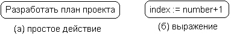
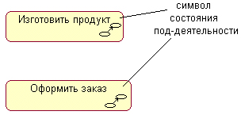
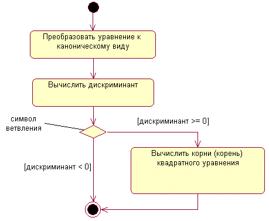
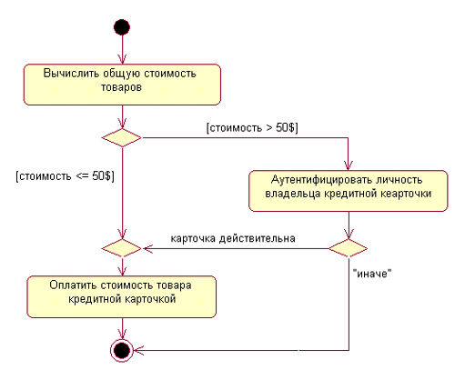
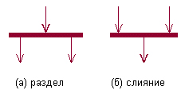
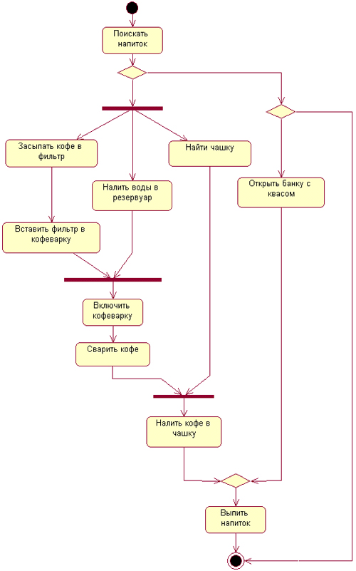
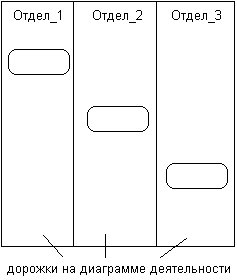
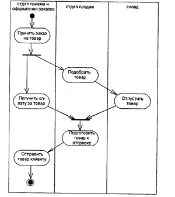
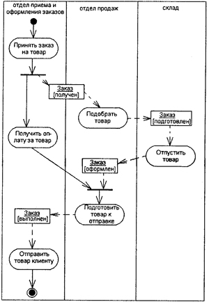
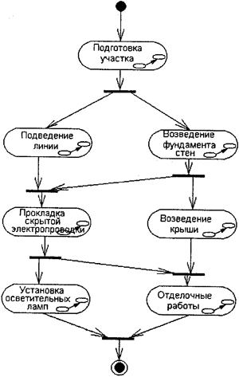

При моделировании поведения проектируемой или анализируемой системы возникает необходимость не только представить процесс изменения ее состояний, но и детализировать особенности алгоритмической и логической реализации выполняемых системой операций. Традиционно для этой цели использовались блок-схемы или структурные схемы алгоритмов (такие как, например, на рис. 1.1). Каждая такая схема акцентирует внимание на последовательности выполнения определенных действий или элементарных операций, которые в совокупности приводят к получению желаемого результата.
Алгоритмические и логические операции, требующие выполнения в определенной последовательности, окружают нас постоянно. Конечно, мы не всегда задумываемся о том, что подобные операции относятся к столь научным категориям. Например, чтобы позвонить по телефону, нам предварительно нужно снять трубку или включить его. Для приготовления кофе или заваривания чая необходимо вначале вскипятить воду. Чтобы выполнить ремонт двигателя автомобиля, требуется осуществить целый ряд нетривиальных операций, таких как разборка силового агрегата, снятие генератора и некоторых других.
Важно подчеркнуть то обстоятельство, что с увеличением сложности системы строгое соблюдение последовательности выполняемых операций приобретает все более важное значение. Если попытаться заварить кофе холодной водой, то мы можем только испортить одну порцию напитка. Нарушение последовательности операций при ремонте двигателя может привести к его поломке или выходу из строя. Еще более катастрофические последствия могут произойти в случае отклонения от установленной последовательности действий при взлете или посадке авиалайнера, запуске ракеты, регламентных работах на АЭС.
Для моделирования процесса выполнения операций в языке UML используются так называемые диаграммы деятельности. Применяемая в них графическая нотация во многом похожа на нотацию диаграммы состояний, поскольку на диаграммах деятельности также присутствуют обозначения состояний и переходов. Отличие заключается в семантике состояний, которые используются для представления не деятельностей, а действий, и в отсутствии на переходах сигнатуры событий. Каждое состояние на диаграмме деятельности соответствует выполнению некоторой элементарной операции, а переход в следующее состояние срабатывает только при завершении этой, операции в предыдущем состоянии. Графически диаграмма деятельности представляется в форме графа деятельности, вершинами которого являются состояния действия, а дугами — переходы от одного состояния действия к другому.
Таким образом, диаграммы деятельности можно считать частным случаем диаграмм состояний. Именно они позволяют реализовать в языке UML особенности процедурного и синхронного управления, обусловленного завершением внутренних деятельностей и действий. Метамодель UML предоставляет для этого необходимые термины и семантику. Основным направлением использования диаграмм деятельности является визуализация особенностей реализации операций классов, когда необходимо представить алгоритмы их выполнения. При этом каждое состояние может являться выполнением операции некоторого класса либо ее части, позволяя использовать диаграммы деятельности для описания реакций на внутренние события системы.
В контексте языка UML деятельность (activity) представляет собой некоторую совокупность отдельных вычислений, выполняемых автоматом. При этом отдельные элементарные вычисления могут приводить к некоторому результату или действию (action). На диаграмме деятельности отображается логика или последовательность перехода от одной деятельности к другой, при этом внимание фиксируется на результате деятельности. Сам же результат может привести к изменению состояния системы или возвращению некоторого значения.
Примечание
Хотя диаграмма деятельности предназначена для моделирования поведения систем, время в явном виде отсутствует на этой диаграмме. Ситуация здесь во многом аналогична диаграмме состояний.
Состояние действия (action state) является специальным случаем состояния с некоторым входным действием и по крайней мере одним выходящим из состояния переходом. Этот переход неявно предполагает, что входное действие уже завершилось. Состояние действия не может иметь внутренних переходов, поскольку оно является элементарным. Обычное использование состояния действия заключается в моделировании одного шага выполнения алгоритма (процедуры) или потока управления.
Графически состояние действия изображается фигурой, напоминающей прямоугольник, боковые стороны которого заменены выпуклыми дугами (рис. 7.1). Внутри этой фигуры записывается выражение действия (action-expression), которое должно быть уникальным в пределах одной диаграммы деятельности.
Рис. 7.1. Графическое изображение состояния действия
Действие может быть записано на естественном языке, некотором псевдокоде или языке программирования. Никаких дополнительных или неявных ограничений при записи действий не накладывается. Рекомендуется в качестве имени простого действия использовать глагол с пояснительными словами (рис. 7.1, а). Если же действие может быть представлено в некотором формальном виде, то целесообразно записать его на том языке программирования, на котором предполагается реализовывать конкретный проект (рис. 7.1, б).
Иногда возникает необходимость представить на диаграмме деятельности некоторое сложное действие, которое, в свою очередь, состоит из нескольких более простых действий. В этом случае можно использовать специальное обозначение так называемого состояния под-деятельности (subactivity state). Такое состояние является графом деятельности и обозначается специальной пиктограммой в правом нижнем углу символа состояния действия (рис. 7.2). Эта конструкция может применяться к любому элементу языка UML, который поддерживает "вложенность" своей структуры. При этом пиктограмма может быть дополнительно помечена типом вложенной структуры.
Рис. 7.2. Графическое изображение состояния под-деятельности
Каждая диаграмма деятельности должна иметь единственное начальное и единственное конечное состояния. Они имеют такие же обозначения, как и на диаграмме состояний (см. рис. 6.4). При этом каждая деятельность начинается в начальном состоянии и заканчивается в конечном состоянии. Саму диаграмму деятельности принято располагать таким образом, чтобы действия следовали сверху вниз. В этом случае начальное состояние будет изображаться в верхней части диаграммы, а конечное — в ее нижней части.
Переход как элемент языка UML был рассмотрен в главе 6. При построении диаграммы деятельности используются только нетриггерные переходы, т. е. такие, которые срабатывают сразу после завершения деятельности или выполнения соответствующего действия. Этот переход переводит деятельность в последующее состояние сразу, как только закончится действие в предыдущем состоянии. На диаграмме такой переход изображается сплошной линией со стрелкой.
Если из состояния действия выходит единственный переход, то он может быть никак не помечен. Если же таких переходов несколько, то сработать может только один из них. Именно в этом случае для каждого из таких переходов должно быть явно записано сторожевое условие в прямых скобках (см. главу 6). При этом для всех выходящих из некоторого состояния переходов должно выполняться требование истинности только одного из них. Подобный случай встречается тогда, когда последовательно выполняемая деятельность должна разделиться на альтернативные ветви в зависимости от значения некоторого промежуточного результата. Такая ситуация получила название ветвления, а для ее обозначения применяется специальный символ.
Графически ветвление на диаграмме деятельности обозначается небольшим ромбом, внутри которого нет никакого текста (рис. 7.3). В этот ромб может входить только одна стрелка от того состояния действия, после выполнения которого поток управления должен быть продолжен по одной из взаимно исключающих ветвей. Принято входящую стрелку присоединять к верхней или левой вершине символа ветвления. Выходящих стрелок может быть две или более, но для каждой из них явно указывается соответствующее сторожевое условие в форме булевского выражения.
В качестве примера рассмотрим фрагмент известного алгоритма нахождения корней квадратного уравнения. В общем случае после приведения уравнения второй степени к каноническому виду: а*х*х + Ь*х + с = 0 необходимо вычислить его дискриминант. Причем, в случае отрицательного дискриминанта уравнение не имеет решения на множестве действительных чисел, и дальнейшие вычисления должны быть прекращены. При неотрицательном дискриминанте уравнение имеет решение, корни которого могут быть получены на основе конкретной расчетной формулы. .
Графически фрагмент процедуры вычисления корней квадратного уравнения может быть представлен в виде диаграммы деятельности с тремя состояниями действия и ветвлением (рис. 7.3). Каждый из переходов, выходящих из состояния "Вычислить дискриминант", имеет сторожевое условие, определяющее единственную ветвь, по которой может быть продолжен процесс вычисления корней в зависимости от знака дискриминанта. Очевидно, что в случае его отрицательности, мы сразу попадаем в конечное состояние, тем самым завершая выполнение алгоритма в целом.
Примечание
Строго говоря, первое из состояний рассматриваемого алгоритма следует считать состоянием под-деятельности, поскольку приведение квадратного уравнения к каноническому виду может потребовать нескольких элементарных действий (приведение подобных и перенос отдельных членов уравнения из правой его части в левую). Поэтому для данного состояния целесообразно добавить соответствующую пиктограмму (как на рис. 7.2).
Рис. 7.3. Фрагмент диаграммы деятельности для алгоритма нахождения корней квадратного уравнения
В рассмотренном примере, как видно из рис. 7.3, выполняемые действия соединяются в конечном состоянии. Однако это вовсе не является обязательным. Можно изобразить еще один символ ветвления, который будет иметь несколько входящих переходов и один выходящий.
В следующем примере (рис. 7.4) рассчитывается общая стоимость товаров, покупаемых по кредитной карточке в супермаркете. Если эта стоимость превышает $50, то выполняется аутентификация личности владельца карточки. В случае положительной проверки (карточка действительная) или если стоимость товаров не превышает $50, происходит снятие суммы со счета и оплата стоимости товаров. При отрицательном результате (карточка недействительная) оплаты не происходит, и товар остается у продавца.
Примечание
Как видно из этого же рисунка, допускается использовать вместо сторожевого условия слово "иначе", указывающее на тот переход, который должен сработать в случае невыполнения сторожевого условия ветвления.
Рис. 7.4. Различные варианты ветвлений на диаграмме деятельности
Один из наиболее значимых недостатков обычных блок-схем или структурных схем алгоритмов связан с проблемой изображения параллельных ветвей отдельных вычислений. Поскольку распараллеливание вычислений существенно повышает общее быстродействие программных систем, необходимы графические примитивы для представления параллельных процессов. В языке UML для этой цели используется специальный символ для разделения и слияния параллельных вычислений или потоков управления. Таким символом является прямая черточка, аналогично обозначению перехода в формализме сетей Петри.
Как правило, такая черточка изображается отрезком горизонтальной линии, толщина которой несколько шире основных сплошных линий диаграммы деятельности. При этом разделение (concurrent fork) имеет один входящий переход и несколько выходящих (рис. 7.5, а). Слияние (concurrent join), наоборот, имеет несколько входящих переходов и один выходящий (рис. 7.5, б).
Для иллюстрации особенностей параллельных процессов выполнения действий рассмотрим ставший уже классическим пример с приготовлением напитка. Достоинство этого примера состоит в том, что он практически не требует никаких дополнительных пояснений в силу своей очевидности (рис. 7.6).
Рис. 7.5. Графическое изображение разделения и слияния параллельных потоков управления
Рис. 7.6. Диаграмма деятельности для примера с приготовлением напитка
Примечание
Наличие параллельности проявляется в том, что мы можем заняться поисками чашки во время приготовления кофе. Впрочем, поскольку выбор конкретных напитков остается за читателем, разработка соответствующей диаграммы деятельности может быть предложена в качестве упражнения.
Таким образом, диаграмма деятельности есть не что иное, как специальный случай диаграммы состояний, в которой все или большинство состояний являются действиями или состояниями под-деятельности. А все или большинство переходов являются нетригтерными переходами, которые срабатывают по завершении действий или под-деятельностей в состояниях-источниках.
Диаграммы деятельности могут быть использованы не только для спецификации алгоритмов вычислений или потоков управления в программных системах. Не менее важная область их применения связана с моделированием бизнес-процессов. Действительно, деятельность любой компании (фирмы) также представляет собой не что иное, как совокупность отдельных действий, направленных на достижение требуемого результата. Однако применительно к бизнес-процессам желательно выполнение каждого действия ассоциировать с конкретным подразделением компании. В этом случае подразделение несет ответственность за реализацию отдельных действий, а сам бизнес-процесс представляется в виде переходов действий из одного подразделения к другому.
Для моделирования этих особенностей в языке UML используется специальная конструкция, получившее название дорожки (swimlanes). Имеется в виду визуальная аналогия с плавательными дорожками в бассейне, если смотреть на соответствующую диаграмму. При этом все состояния действия на диаграмме деятельности делятся на отдельные группы, которые отделяются друг от друга вертикальными линиями. Две соседние линии и образуют дорожку, а группа состояний между этими линиями выполняется отдельным подразделением (отделом, группой, отделением, филиалом) компании (рис. 7.7).
Названия подразделений явно указываются в верхней части дорожки. Пересекать линию дорожки могут только переходы, которые в этом случае обозначают выход или вход потока управления в соответствующее подразделение компании. Порядок следования дорожек не несет какой-либо семантической информации и определяется соображениями удобства.
В качестве примера рассмотрим фрагмент диаграммы деятельности торговой компании, обслуживающей клиентов по телефону. Подразделениями компании являются отдел приема и оформления заказов, отдел продаж и склад.
Этим подразделениям будут соответствовать три дорожки на диаграмме деятельности, каждая из которых специфицирует зону ответственности подразделения. В данном случае диаграмма деятельности заключает в себе не только информацию о последовательности выполнения рабочих действий, но и о том, какое из подразделений торговой компании должно выполнять то или иное действие (рис. 7.8).
Рис. 7.7. Вариант диаграммы деятельности с дорожками
Рис. 7.8. Фрагмент диаграммы деятельности для торговой компании
Из указанной диаграммы деятельности сразу видно, что после принятия заказа от клиента отделом приема и оформления заказов осуществляется распараллеливание деятельности на два потока (переход-разделение). Первый из них остается в этом же отделе и связан с получением оплаты от клиента за заказанный товар. Второй инициирует выполнение действия по подбору товара в отделе продаж (модель товара, размеры, цвет, год выпуска и пр.). По окончании этой работы инициируется действие по отпуску товара со склада. Однако подготовка товара к отправке в торговом отделе начинается только после того, как будет получена оплата за товар от клиента и товар будет отпущен со склада (переход-соединение). Только после этого товар отправляется клиенту, переходя в его собственность.
В общем случае действия на диаграмме деятельности выполняются над теми или иными объектами. Эти объекты либо инициируют выполнение действий, либо определяют некоторый результат этих действий. При этом действия специфицируют вызовы, которые передаются от одного объекта графа деятельности к другому. Поскольку в таком ракурсе объекты играют определенную роль в понимании процесса деятельности, иногда возникает необходимость явно указать их на диаграмме деятельности.
Для графического представления объектов, как уже упоминалось в главе 5, используются прямоугольник класса, с тем отличием, что имя объекта подчеркивается. Далее после имени может указываться характеристика состояния объекта в прямых скобках. Такие прямоугольники объектов присоединяются к состояниям действия отношением зависимости пунктирной линией со стрелкой. Соответствующая зависимость определяет состояние конкретного объекта после выполнения предшествующего действия.
На диаграмме деятельности с дорожками расположение объекта может иметь некоторый дополнительный смысл. А именно, если объект расположен на границе двух дорожек, то это может означать, что переход к следующему состоянию действия в соседней дорожке ассоциирован с готовностью некоторого документа (объект в некотором состоянии). Если же объект целиком расположен внутри дорожки, то и состояние этого объекта целиком определяется действиями данной дорожки.
Возвращаясь к предыдущему примеру с торговой компанией, можно заметить, что центральным объектом процесса продажи является заказ или вернее состояние его выполнения. Вначале до звонка от клиента заказ как объект отсутствует и возникает лишь после такого звонка. Однако этот заказ еще не заполнен до конца, поскольку требуется еще подобрать конкретный товар в отделе продаж. После его подготовки он передается на склад, где вместе с отпуском товара заказ окончательно дооформляется. Наконец, после получения подтверждения об оплате товара эта информация заносится в заказ, и он считается выполненным и закрытым. Данная информация может быть представлена графически в виде модифицированного варианта диаграммы деятельности этой же торговой компании (рис. 7.9).
Примечание
Более подробно правила именования объектов и их использования будут рассмотрены при построении диаграммы кооперации в главе 9. Что касается диаграмм деятельности, то применительно к ним объекты играют вспомогательную роль и поэтому здесь детально не рассматриваются. Следует также помнить, что на диаграмме деятельности один и тот же объект может быть изображен несколько раз, что не должно вносить неопределенность в спецификацию состояний действия.
Рис. 7.9. Фрагмент диаграммы деятельности торговой компании с объектом-заказом
В заключение следует остановиться на необходимости синхронизации отдельных действий на диаграмме деятельности. Такая необходимость возникает всякий раз, когда параллельно выполняемые действия оказывают влияние на друг на друга. Если вспомнить материал главы 6, то применительно к диаграмме состояний для этой цели применялось специальное псевдосостояние — синхронизирующее состояние. На диаграмме деятельности никаких дополнительных обозначений не используется, поскольку синхронизация параллельных процессов может быть реализована с помощью переходов "разделение-слияние".
В качестве примера рассмотрим упрощенную ситуацию с моделированием процесса постройки дома (см. главу 6). Напомним, что в этом примере постройка дома включает в себя строительные работы (возведение фундамента и стен, возведение крыши и отделочные работы) и работы по электрификации дома (подведение электрической линии, прокладка скрытой электропроводки и установка осветительных ламп). Синхронизация параллельного выполнения этого комплекса работ может быть явно указана на диаграмме деятельности (рис. 7.10).
Рис. 7.10. Диаграмма деятельности с синхронизацией параллельных действий
В рассмотренном примере все состояния являются состояниями под-деятельности. Это означает, что каждое из них можно детализировать в виде отдельного графа деятельности с соответствующей диаграммой. Действительно, состояние под-деятельности "Подготовка участка" может включать в себя такие действия, как очистка участка от деревьев, вывоз этих деревьев за пределы участка, рытье котлована под фундамент, установка временных строений для складирования строительных материалов и другие работы.
Впрочем, некоторые из состояний могут быть и простыми состояниями действия, в случае если соответствующая работа превращается в выполнение элементарного действия, неразложимого на отдельные операции или приемы.
7.5. Рекомендации по построению диаграмм деятельности
Диаграммы деятельности играют важную роль в понимании процессов реализации алгоритмов выполнения операций классов и потоков управления в моделируемой системе. Используемые для этой цели традиционные блок-схемы алгоритмов обладают серьёзными ограничениями в представлении параллельных процессов и их синхронизации. Применение дорожек и объектов открывает дополнительные возможности для наглядного представления бизнес-процессов, позволяя специфицировать деятельность подразделений компаний и фирм.
Содержание диаграммы деятельности во многом напоминает диаграмму состояний, хотя и не тождественно ей. Поэтому многие рекомендации по построению последней оказываются справедливыми применительно к диаграмме деятельности. В частности, эта диаграмма строится для отдельного класса, варианта использования, отдельной операции класса или целой подсистемы.
С одной стороны, на начальных этапах проектирования, когда детали реализации деятельностей в проектируемой системе неизвестны, построение диаграммы деятельности начинают с выделения под-деятельностей, которые в совокупности образуют деятельность подсистем. В последующем, по мере разработки диаграмм классов и состояний, эти под-деятельности уточняются в виде отдельных вложенных диаграмм деятельности компонентов подсистем, какими выступают классы и объекты.
С другой стороны, отдельные участки рабочего процесса в существующей системе могут быть хорошо отлаженными, и у разработчиков может возникнуть желание сохранить этот механизм выполнения действий в проектируемой системе. Тогда строится диаграмма деятельности для этих участков, отражающая конкретные особенности выполнения действий с использованием дорожек и объектов. В последующем такая диаграмма вкладывается в более общие диаграммы деятельности для подсистемы и системы в целом, сохраняя свой уровень детализации.
Таким образом, процесс объектно-ориентированного анализа и проектирования сложных систем представляется как последовательность итераций нисходящей и восходящей разработки отдельных диаграмм, включая и диаграмму деятельности. Доминирование того или иного из направлений разработки определяется особенностями конкретного проекта и его новизной.
В случае типового проекта большинство деталей реализации действий могут быть известны заранее на основе анализа существующих систем или предшествующего опыта разработки систем-прототипов. Для этой ситуации доминирующим будет восходящий процесс разработки (Зачем изобретать велосипед заново?). Использование типовых решений может существенно сократить время разработки и избежать возможных ошибок при реализации проекта.
При разработке проекта новой системы, процесс функционирования которой основан на новых технологических решениях, ситуация представляется более сложной. А именно, до начала работы над проектом могут быть неизвестны не только детали реализации отдельных деятельностей, но и само содержание этих деятельностей становится предметом разработки. В данном случае доминирующим будет нисходящий процесс разработки от более общих схем к уточняющим их диаграммам. При этом достижение такого уровня детализации всех диаграмм, который достаточен для понимания особенностей реализации всех действий и деятельностей, может служить признаком завершения отдельных этапов работы над проектом.
В заключение следует заметить, что диаграмма деятельности, так же как и другие виды канонических диаграмм, не содержит средств выбора оптимальных решений. При разработке сложных проектов проблема выбора оптимальных решений становится весьма актуальной. Рациональное расходование средств, затраченных на разработку и эксплуатацию системы, повышение ее производительности и надежности зачастую определяют конечный результат всего проекта. В такой ситуации можно рекомендовать использование дополнительных средств и методов, ориентированных на аналитико-имитационное исследование моделей системы на этапе разработки ее проекта.
В частности, при построении диаграмм деятельности сложных систем могут быть успешно использованы различные классы сетей Петри (классические, логико-алгебраические, стохастические, нечеткие и др.) и нейронных сетей. Применение этих формализмов позволяет не только получить оптимальную структуру поведения системы на ее модели, но и специфицировать целый ряд дополнительных характеристик системы, которые не могут быть представлены на диаграмме деятельности и других диаграммах UML.
| Каталог | Индекс раздела | Оглавление |